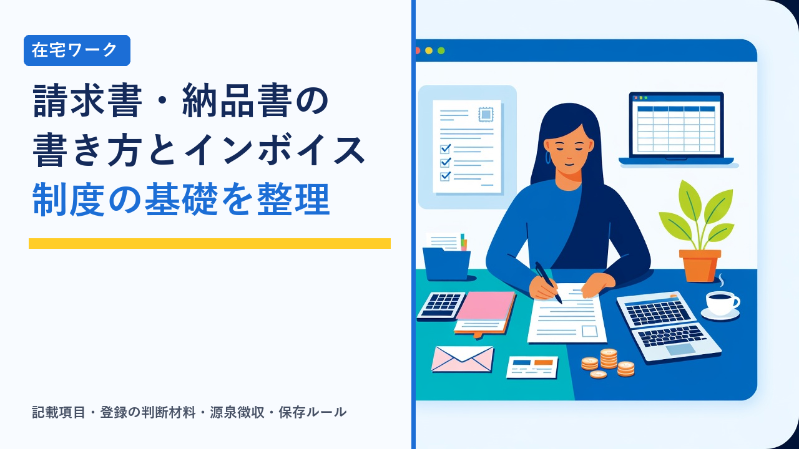

在宅ワークの請求書・納品書の書き方とインボイス制度の基礎
2026-09-24 更新

在宅ワークやクラウドソーシングで報酬を受け取るとき、避けて通れないのが請求書と納品書のやり取りです。会社員のときは経理部門が処理していた書類を、フリーランスや副業では自分で作成し、保存まで管理する必要があります。さらに2023年10月に始まったインボイス制度（適格請求書等保存方式）によって、請求書に書くべき項目や、取引先との関係に影響する判断が増えました。この記事では、請求書・納品書の基本的な記載項目、インボイス制度の仕組みと在宅ワーカーに関係する部分、登録するかどうかを考えるときの材料、源泉徴収や書類保存のルール、クラウドソーシングを使う場合の注意点を客観的に整理します。
請求書・納品書・領収書の役割の違い
取引で使う書類にはそれぞれ役割があります。在宅ワークでは請求書が中心ですが、納品書や領収書を求められる場面もあるため、違いを押さえておくと対応に迷いません。
納品書
「いつ、何を納めたか」を示す書類です。納品日、納品物の内容と数量、発行者と宛先を記載します。発注者側が検収（内容の確認）をする際の根拠になります。クラウドソーシングではシステム上の納品・検収機能がこの役割を担うことが多く、別途発行しないケースも一般的です。
請求書
「いくらを、いつまでに、どこへ支払ってほしいか」を伝える書類です。取引内容、金額、消費税、振込先、支払期限を記載します。発注者の経理処理と、受注者側の売上の記録の両方で根拠になるため、在宅ワークで最も重要な書類といえます。
領収書
「代金を受け取った」ことを証明する書類です。銀行振込の場合は振込記録が支払いの証拠になるため、発注者から求められない限り発行しないことが多いです。求められた場合は、受領日・金額・但し書きを記載して発行します。
請求書に記載する基本項目
請求書に法律上の決まった様式はありません。ただし、発注者の経理処理や税務上の要件を満たすために、一般的に記載すべき項目はほぼ決まっています。特にインボイス制度に対応する場合は、後述の追加項目が必須になります。
| 項目 | 内容 | 補足 |
|---|---|---|
| 宛名 | 発注者の会社名・氏名。「御中」「様」を使い分ける | 担当部署や担当者名の記載を求められることもある |
| 発行日 | 請求書を発行した日付 | 発注者の締め日に合わせるよう指定される場合がある |
| 請求書番号 | 自分で管理するための通し番号 | 年月と連番の組み合わせが一般的。問い合わせ対応や再発行時に役立つ |
| 発行者情報 | 氏名または屋号、住所、連絡先 | インボイス発行事業者なら登録番号も記載する |
| 取引内容 | 作業の名称、数量、単価、金額 | 「記事執筆 5本」「バナー制作 2点」など、発注者が照合しやすい粒度で書く |
| 小計・消費税・合計 | 税抜金額、消費税額、税込合計を分けて記載 | インボイス対応では税率ごとの区分と消費税額の明記が必須 |
| 源泉徴収額（該当時） | 原稿料・デザイン料など源泉徴収の対象になる報酬で、発注者が法人等の場合 | 差引後の振込額を明示すると入金確認がしやすい |
| 振込先 | 銀行名、支店名、口座種別、口座番号、口座名義 | 振込手数料をどちらが負担するかは契約時に確認しておく |
| 支払期限 | 「月末締め翌月末払い」など発注者の支払サイトに沿った期日 | 期限が契約書と一致しているか確認する |
請求書は発注者側の会計処理に直結するため、独自の書式を使う前に「指定の書式はあるか」「締め日と提出方法はどうするか」を確認しておくと手戻りが減ります。契約時に確認しておきたい事項は在宅ワークで注意したいこと（契約・報酬・確定申告の基礎知識まとめ）で整理しています。
インボイス制度の仕組みと在宅ワーカーに関係する部分
インボイス制度（適格請求書等保存方式）は、消費税の仕入税額控除に関わる制度です。仕組みそのものは発注者側の税務に関するものですが、その影響が受注者である在宅ワーカーの契約や単価に及ぶため、基本を理解しておく必要があります。
仕組みの概要
消費税の課税事業者は、売上にかかる消費税から、仕入れや外注費にかかった消費税を差し引いて納税します。この「差し引き」を仕入税額控除といいます。インボイス制度の下では、適格請求書（インボイス）を保存していないと、原則としてこの控除が受けられません。適格請求書を発行できるのは、税務署に登録した「適格請求書発行事業者」だけです。
つまり、発注者が課税事業者の場合、インボイスを発行できない受注者に外注費を支払うと、その分の消費税を控除できず、発注者の税負担が実質的に増えることになります。この点が、免税事業者である在宅ワーカーの契約条件に影響する理由です。
適格請求書に必要な記載項目
適格請求書として認められるには、前述の一般的な項目に加えて次の要素が必要です。
- 登録番号：「T」から始まる13桁の番号。発行事業者として登録すると通知されます。
- 税率ごとに区分した対価の額と適用税率：在宅ワークの役務提供は原則として標準税率のみですが、「10%対象」と明記します。
- 税率ごとに区分した消費税額：税率ごとの消費税額を明示します。端数処理は税率ごとに1回と定められています。
- 交付を受ける事業者の氏名または名称：宛名として通常記載している項目です。
なお、登録番号を持たない事業者が、登録番号に似た番号を記載したり、適格請求書と誤認させる書類を発行したりすることは禁止されています。免税事業者のままであれば、登録番号欄は設けずに従来どおりの請求書を発行します。
経過措置と特例（執筆時点の制度）
制度の急な変更による負担を和らげるため、いくつかの経過措置や特例が設けられています。いずれも期限や条件が定められているため、現在どの段階にあるかを確認することが重要です。
| 措置・特例 | 内容 | 期間・条件の目安 |
|---|---|---|
| 免税事業者からの仕入れに関する経過措置 | 発注者が免税事業者に支払った消費税相当額のうち、一定割合を控除できる | 制度開始から3年間は80%、その後の3年間は50%。2026年10月以降は50%の段階に入る |
| 2割特例 | 免税事業者からインボイス発行事業者になった場合、納税額を売上にかかる消費税の2割に軽減できる | 2026年9月30日までの日の属する課税期間まで。個人事業主の場合は2026年分の申告が最後の対象 |
| 簡易課税制度 | 業種ごとのみなし仕入率で納税額を計算できる。サービス業では売上税額の一定割合が控除の目安 | 基準期間の課税売上高が一定額以下で、事前の届出が必要 |
| 少額特例（発注者側） | 1万円未満の取引はインボイスがなくても帳簿の記載のみで控除できる | 一定規模以下の事業者が対象。期限あり |
上記は執筆時点（2026年9月）の一般的な整理です。制度は改正されることがあるため、実際の判断や申告にあたっては国税庁の公式情報や税理士などの専門家にご確認ください。2割特例の終了後は、発行事業者として登録している場合の納税額の計算方法が変わるため、簡易課税制度の選択を含めて改めて検討が必要になります。
インボイス発行事業者に登録するかどうかの判断材料
在宅ワーカーの多くは、売上規模から見て本来は消費税の免税事業者です。登録するかどうかに一律の正解はなく、取引先の属性と自分の売上構成から判断する形が一般的です。
登録を検討しやすいケース
- 主な取引先が法人などの課税事業者で、インボイスの発行を求められている
- 継続的な直接契約が多く、取引先との条件交渉に影響が出ている
- 今後、売上を伸ばして課税事業者になる見込みがある
- 会計ソフトなどで消費税の計算や申告に対応できる体制がある
免税事業者のままを検討しやすいケース
- 取引先が一般消費者や免税事業者中心で、インボイスを求められていない
- クラウドソーシングのタスク形式など、少額・単発の案件が中心
- 売上が小さく、消費税の納税と事務負担が収入に対して重い
- 取引先が経過措置や少額特例の範囲で対応できている
登録すると、売上の規模にかかわらず消費税の申告・納税義務が生じ、請求書の記載要件や書類保存の負担も増えます。一方で登録しない場合は、取引先から消費税相当額の見直しを求められる可能性があります。なお、発注者が一方的に消費税相当額を減額したり、登録を強要したりすることは独占禁止法や下請法上問題になる場合があると公正取引委員会が示しているため、条件変更を求められたときは双方の協議に基づくことが前提です。単価の交渉全般については在宅ワークの単価交渉と値上げのタイミング：実績の見せ方と伝え方で整理しています。
源泉徴収の扱いと請求書での書き方
原稿料、デザイン料、講演料、翻訳料など、所得税法で定められた一部の報酬は、発注者が法人等の場合に源泉徴収の対象になります。発注者は報酬から所得税を差し引いて支払い、受注者は確定申告で精算します。個人が発注者の場合や、対象外の業務（データ入力、事務代行など）は源泉徴収されないのが原則です。
- 税率の目安：報酬額に対して10.21%（復興特別所得税を含む）。1回の支払額が100万円を超える部分は税率が上がります。
- 消費税の扱い：請求書で報酬額と消費税額を明確に区分して記載している場合は、税抜の報酬額を基準に源泉徴収額を計算できます。区分していない場合は税込額が基準になります。
- 請求書への記載：源泉徴収額を請求書に書く義務はありませんが、「小計→消費税→源泉徴収額→差引請求額」の順で記載しておくと、発注者の処理と自分の入金確認がしやすくなります。
- 確定申告での精算：発注者から交付される支払調書や、自分の請求書・入金記録をもとに、源泉徴収された税額を申告書に記載して精算します。
源泉徴収の対象になるかどうかは業務の内容によって判断されます。確定申告が必要になる所得の目安は在宅ワークの確定申告、いくらから必要？年間所得別の目安まとめで整理しています。
書類の保存ルール（電子帳簿保存法を含む）
請求書は発行して終わりではなく、発行側・受領側ともに一定期間の保存義務があります。特に電子データで授受した書類には、電子帳簿保存法のルールが適用されます。
| 書類の種類 | 保存の考え方 | 注意点 |
|---|---|---|
| 発行した請求書の控え | 写しまたはデータを保存する。インボイス発行事業者は適格請求書の写しの保存が義務 | 保存期間は原則7年が目安。会計ソフトで作成した場合はソフト内のデータも控えに該当 |
| 受け取った請求書・領収書 | 経費の証拠として保存する | 在宅ワークの経費（通信費、機材、ソフト利用料など）の根拠になる |
| メール・システムで授受した電子データ | 電子取引として、原則データのまま保存する（紙に印刷しての保存だけでは要件を満たさない） | 日付・金額・取引先で検索できる状態にするなどの要件がある。一定の条件で簡易な対応が認められる場合もある |
| 納品書・検収の記録 | 納品と検収の事実を示すものとして保存しておくと、報酬をめぐるトラブル時の根拠になる | クラウドソーシングではシステムの取引履歴が該当することが多い |
請求書の作成と保存を手作業で続けると、件数が増えるにつれて管理が難しくなります。請求書の発行から売上の記帳、電子保存までを一体で扱える会計ソフトや請求書作成サービスの選び方は在宅ワーカーが使いたい確定申告ツール・記帳アプリの選び方で整理しています。
クラウドソーシングを使う場合の請求書とインボイス
クラウドソーシングサイトを通じた案件では、直接契約とは書類の流れが異なります。多くのサービスでは、受注者が請求書を個別に作成する必要がなく、システムが取引ごとの書類を発行する仕組みになっています。主な特徴を整理します。
- 請求書はシステムが生成することが多い：検収完了後に報酬が確定し、サイト上で請求・支払の記録が作られます。自分で請求書を発行する場面は限られます。
- インボイス対応はサービスごとに仕組みが異なる：登録番号をプロフィールや設定画面に登録すると、システムが発行する書類に反映される方式が一般的です。未登録の場合の取り扱い（発注者側の表示や、報酬への影響）はサービスによって差があります。
- システム手数料の扱い：報酬から差し引かれる手数料は、受注者側の経費として記帳する形が一般的です。手数料に関する書類もサイトからダウンロードできることが多いです。
- 売上の記録は取引履歴から：確定申告に向けて、サイトの取引履歴や年間の報酬集計をダウンロードして保存しておきます。電子データのまま保存する必要がある点は直接契約と同じです。
請求書の作成や管理に不慣れな段階では、こうした仕組みが整っているサービスを使うことで、書類まわりの負担を減らしながら実績を積むことができます。
一方、エージェント型のサービスを通じた業務委託では、契約や請求のやり取りをエージェントが仲介する形になり、インボイスや源泉徴収の扱いについても案内を受けられることが一般的です。クラウドソーシングとの違いはクラウドソーシングとエージェント型サービスの違い比較で整理しています。
選び方のポイント
- 請求書は発注者の書式・締め日に合わせる：独自の書式を使う前に、指定の様式、締め日、提出方法（PDF・システム入力など）を確認します。
- 金額は税抜・消費税・税込を分けて書く：インボイス対応の有無にかかわらず、区分して記載しておくと源泉徴収の計算や発注者の処理が明確になります。
- インボイス登録は取引先の属性で判断する：法人との直接契約が中心なら登録の検討が現実的です。少額・単発が中心なら免税事業者のままという選択も一般的です。
- 特例の期限を把握しておく：2割特例や経過措置には期限があり、2026年10月以降は段階が変わります。登録済みの人は簡易課税の選択を含めて見直しの時期です。
- 電子データはデータのまま保存する：メールやシステムで受け取った請求書は、検索できる形で電子保存するのが原則です。
- 件数が増えたらツールに任せる：請求書発行・記帳・保存を一体で扱える会計ソフトを使うと、確定申告の準備も楽になります。
よくある質問
免税事業者のままでも、請求書に消費税を記載してよいのですか？
免税事業者が消費税相当額を含めて請求すること自体は禁止されていません。ただし、登録番号がないため適格請求書にはならず、発注者側は原則として仕入税額控除を受けられません（経過措置の期間中は一定割合が控除可能です）。適格請求書と誤認させる記載、たとえば架空の登録番号や「適格請求書」という表記を使うことは禁止されています。免税事業者のままであれば、登録番号欄を設けずに一般的な請求書として発行します。
インボイス発行事業者に登録すると、どんな義務が増えますか？
主に4つの負担が増えます。第一に、売上規模にかかわらず消費税の申告と納税が必要になります。第二に、発行する請求書を適格請求書の記載要件（登録番号、税率ごとの区分、消費税額など）に沿った形にする必要があります。第三に、発行した適格請求書の写しを保存する義務が生じます。第四に、取引先から求められた場合は適格請求書を交付する義務があります。2割特例の終了後は納税額の計算方法も変わるため、簡易課税制度の適用を含めて事前に確認しておくことが重要です。
クラウドソーシングで受けた案件でも、自分で請求書を作る必要がありますか？
多くのクラウドソーシングサイトでは、検収完了後にシステムが取引ごとの書類を生成するため、受注者が個別に請求書を作成する必要はないのが一般的です。インボイス対応についても、登録番号をサイトに登録することで書類に反映される仕組みが用意されていることが多いです。ただし、対応方法や未登録時の取り扱いはサービスごとに異なるため、利用しているサイトの案内を確認してください。確定申告に向けては、サイトの取引履歴や年間の報酬集計を電子データのまま保存しておく必要があります。